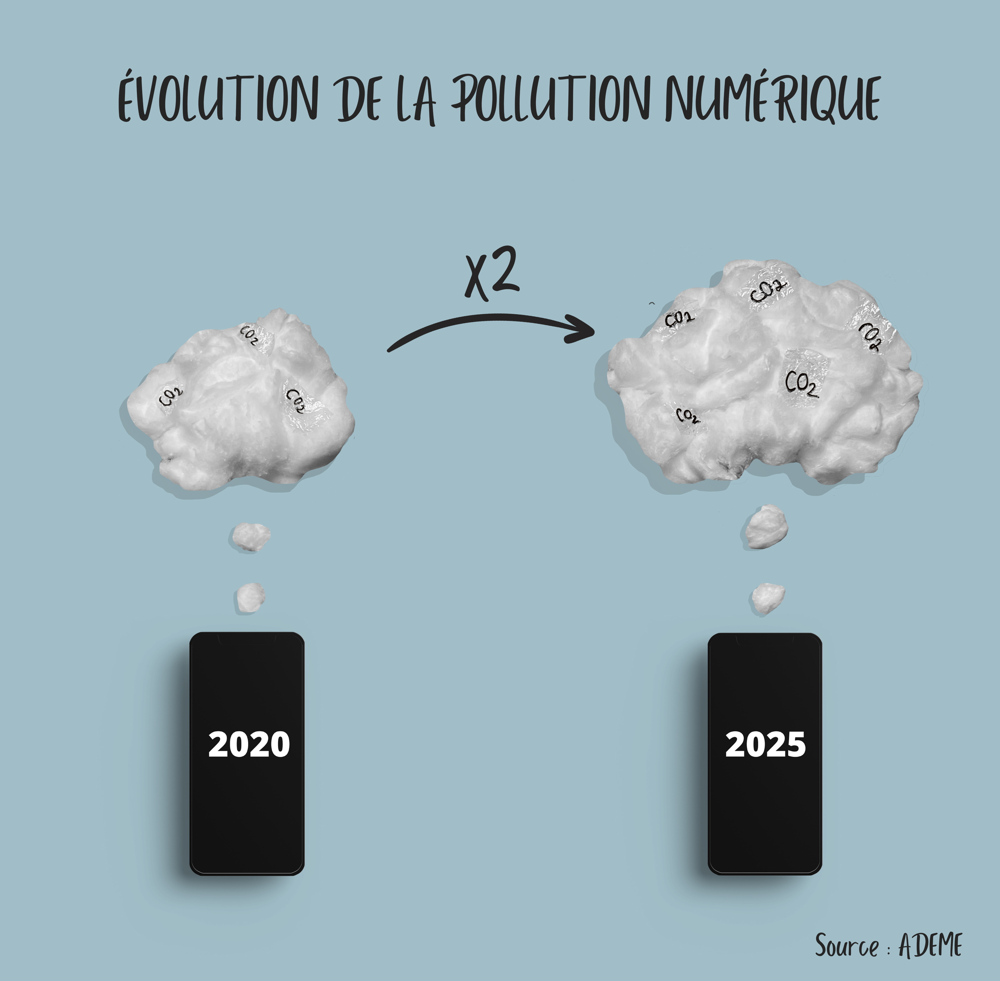

La pollution numérique
L'objectif de ce projet était de réaliser une dataviz en partant d'une photographie.

Je souhaitais montrer l'importance qu'a la pollution numérique dans notre quotidien, et l'ampleur qu'elle prend. Selon l'ADEME, l'agence de la transition écologique, le taux de CO2 lié à la pollution numérique devrait doubler d'ici 2025. Des chiffres affolants quand on sait que la pollution numérique est responsable de 4% des émissions mondiales de gaz à effet de serre.
En savoir plus sur la pollution numérique. J'ai réalisé cette vidéo dans le cadre du cours de médiations collaboratives.